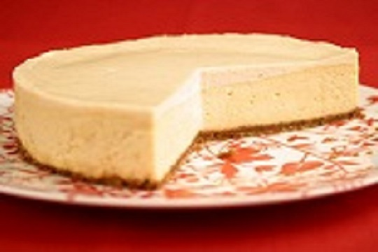

Homemade Classic Cheesecake

Description
This is literally the best cheesecake recipe ever. Seven simple ingredients. No water bath. No cracking ever. It is the
only recipe you’ll ever need for classic, jaw-dropping, super creamy cheesecake. Follow my directions and it is simply
fail-proof!
Ingredients
- Graham Cracker Crumbs: Honeymaid is my favorite, but any brand is fine. You can grind your own or buy them as crumbs.
- Granulated Sugar: to sweeten the crust and the filling.
- Melted Butter: to hold the graham cracker crust together.
- Cream Cheese: I like using the Philadelphia brand; I think it’s slightly tangier than other off-brands out there. Make sure you are using room temperature, soft cream cheese.
- Sour Cream: adds an extra tang. This also needs to be at room temperature.
- Vanilla Extract: for flavor since this is a classic cheesecake.
- Eggs: needed for structure. Absolutely have these at room temperature and beat together before adding in.
Steps
- Make the Graham Cracker Crust: Stir graham cracker crumbs, sugar and melted butter together and press into a 9-inch springform pan. Bake for 7 minutes in a 350-degree oven. Set aside to cool.
- Make the Cheesecake Filling: Stir very soft cream cheese together with the granulated sugar. Stir in the vanilla and sour cream. Scrape the sides really really well and stir again to ensure there are no lumps.Whisk eggs together in a separate bowl and slowly add to the cheesecake filling with the mixer on. Once eggs are incorporated turn mixer off. Scrape the sides really well to ensure a very smooth batter. If there are lumps, stir them in by hand.
- Remove Air Bubbles: Tap bowl on the counter for 30-45 seconds to remove air bubbles. Air bubbles can contribute to why cheesecakes crack and we definitely want to prevent that. This is a small step, but makes a big difference.
- Bake the Cheesecake (without a water bath!): Pour batter into graham cracker crust, smooth the top and bake. Bake at 325 degrees, reduce heat to 250 to finish cooking. Keep the oven door closed this entire time! Let cheesecake sit in the hot oven with the oven closed for 30 minutes before cracking the door and letting it continue cooling for another hour. Remove from oven and bring cheesecake to room temperature. The best baking pan for this cheesecake recipe is a 9-inch springform pan and don’t have a suggestion for an optional pan to use instead. You can definitely put this into a 10-incher, but definitely won’t fit into an 8. Also, I know you can buy larger 9″x 3″ cake pans without the springform option, but just don’t see any good way to remove the whole cheesecake without ruining it. Moral of the story? Splurge and get the springform pan. Or find a friend and borrow one. I’ve had readers bake this recipe in a 9×13 pan and it has absolutely worked! So keep that in mind as well. If you’re ok with cheesecake bars, then this is a great option for you.
- Refrigerate & Serve: Once the cheesecake is at room temperature, you can cover and refrigerate until completely chilled. The beautiful thing about cheesecake is it’s a great dessert to make in advance because it stores so well in the fridge. When you’re ready to serve, cut into slices, top with any desired toppings (see notes below) and enjoy!